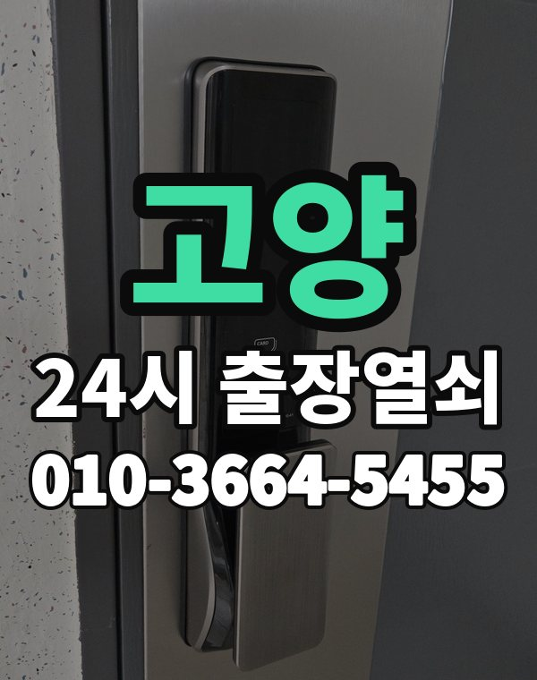

고양 출장열쇠, 이런 동네입니다
고양은 일산 신도시 아파트와 삼송, 원흥 새 아파트, 덕양구 주택가가 넓게 퍼진 곳입니다.
일산 쪽 오래된 단지는 처음 달았던 도어락을 바꿀 때가 된 집이 많습니다.

고양시 출장 가는 동네
- 백석동
- 마두동
- 장항동
- 식사동
- 풍동
- 주엽동
- 대화동
- 탄현동
- 일산동
- 덕이동
- 화정동
- 행신동
- 원흥동
- 삼송동
- 지축동
백석동 출장열쇠, 마두동 열쇠집처럼 동네 이름으로 찾으셨어도 같은 곳입니다.
적혀 있지 않은 동네도 고양시 안이면 다 갑니다.
고양에서 맡기실 수 있는 일
고양 출장, 이렇게 알려주세요
일산동구, 일산서구, 덕양구 중 어디인지 먼저 알려주세요.
오피스텔은 건물 출입이 되는지 미리 확인해 주시면 좋습니다.
정발산역, 주엽역, 화정역, 삼송역, 대화역 근처라고 말씀해 주셔도 위치 잡기가 쉬워집니다.
가까운 역이나 큰 건물, 단지 이름을 같이 알려주세요.
- 주소와 건물 이름 (아파트면 동, 호수)
- 문 종류, 번호판이 켜지는지
- 사시는 걸 확인할 신분증이나 우편물이 있는지
전화부터 작업까지 순서는 이용안내에 적어 두었습니다.
고양 출장열쇠 관련 글
- 고양 백석동에서 열쇠 업체 고를 때 통화로 꼭 물어볼 다섯 가지
- 고양 백석동 오피스텔 출입문 잠김 출장열쇠로 안전하게 여는 순서
- 고양 대화동 도어락 배터리가 방전돼 번호판이 꺼졌을 때 출장열쇠 부르기 전 대처법
- 고양 대화동 도어락 비밀번호 바꾸는 주기와 가족끼리 나누는 요령
- 고양 덕이동 보조키가 잠겨 집에 못 들어갈 때 종류별로 보는 문 앞 대처
- 고양 덕이동 이사 후 도어락 비밀번호 초기화 이전 세입자 번호 지우는 방법 출장열쇠
- 고양 행신동 현관문이 안 열리는 원인을 도어락 종류와 증상 시점으로 가려내는 법
- 고양 행신동 도어락 비밀번호를 잊어버렸을 때 출장열쇠 부르기 전 확인할 것
- 고양 화정동 새 도어락 달기 전에 줄자 하나로 문 두께와 보조키 자리 직접 재 보기
- 고양 화정동 열쇠가 안 돌아가거나 안 빠질 때 실린더 상태부터 살피는 법
- 고양 화정동 스마트 도어락 고르는 법 번호 카드 지문 방식 출장열쇠 상담 가이드
- 고양 일산동 한밤·새벽에 현관문이 안 열릴 때 출장열쇠에 전화 거는 요령
- 고양 일산동 열쇠 분실 문 잠그고 나온 경우 출장열쇠로 열고 열쇠 만드는 순서
- 고양 일산동 오래 쓴 도어락을 바꿀 때 우리 식구에게 맞는 지문·카드·얼굴인식 고르기
- 고양 장항동 택배 받으러 나왔다가 문이 잠겼을 때 출장열쇠 부르는 순서
- 고양 장항동 아파트 철문이 여름에 뻑뻑할 때 패킹부터 번호판까지 손볼 차례
- 고양 지축동 한파에 도어락이 먹통이 됐을 때 배터리 방전 얼어붙음 대처와 출장열쇠
- 고양 지축동 한여름 열기와 습기로 현관문이 뻑뻑해질 때 손쓰는 요령
- 고양 주엽동 출장열쇠 요청 전 챙길 것, 사진 두 장과 단지 위치 설명이면 충분합니다
- 고양 주엽동 도어락 교체 전 확인할 것 출장열쇠 비용 안내는 이렇게 진행됩니다
- 고양 마두동 오피스텔 호실 문 잠김, 관리실과 출장열쇠 중 어디부터 연락할까
- 고양 마두동 상가 사무실 도어락 출입문 문제 출장열쇠 점검 가이드
- 고양 풍동 이사 첫 주 도어락 재설정, 인테리어 뒤에 한 번 더 바꿔야 하는 이유
- 고양 풍동 오래된 주택 현관문 문틀이 처져 안 열릴 때 출장열쇠 점검 방법
- 고양 삼송동 공동현관 출입문과 대문 철문이 안 열릴 때 누구에게 먼저 연락할까
- 고양 삼송동 스마트 도어락 앱 연결이 안 될 때 와이파이 월패드 연동 점검 출장열쇠
- 고양 식사동 아이가 안에서 문을 잠갔을 때 침착하게 대처하는 방법과 출장열쇠
- 고양 식사동 쉐어하우스·자취방 출입문이 잠겼을 때와 번호 공유 규칙
- 고양 탄현동 장마철 겨울철 결로 습기로 도어락이 오작동할 때 출장열쇠 점검 요령
- 고양 탄현동 열쇠를 잃어버렸거나 문을 잠그고 나왔을 때 움직이는 순서
- 고양 원흥동 현관 방범 점검, 집에서 직접 살펴볼 다섯 가지
- 고양 원흥동 지문 인식이 안 될 때 도어락 지문 오류 원인과 출장열쇠 점검 방법
고양 출장열쇠 자주 묻는 질문
고양시 끝쪽 동네도 오시나요?
백석동, 마두동, 장항동, 식사동, 풍동, 주엽동 등 고양시 전 지역 갑니다. 적혀 있지 않은 동네도 고양시 안이면 출동합니다.
고양에서 밤늦게나 새벽에도 오시나요?
24시간 전화 받고 출동합니다. 위치를 알려주시면 도착 예상 시간을 먼저 말씀드립니다.
끝내 못 열면 돈은 어떻게 되나요?
못 열면 받지 않습니다. 얼마인지는 손대기 전에 먼저 말씀드립니다.
세입자도 문을 열어 주시나요?
거주하시는 분인지 확인한 뒤 엽니다. 신분증이 집 안에 있으면 관리사무소 확인도 됩니다.
고양 도어락 새로 다는 것도 되나요?
네, 수리와 설치, 교체 모두 합니다. 고쳐서 쓸 수 있으면 고치는 쪽을 먼저 말씀드립니다.